Your Mac, one page at a time.
Press a key, and the screen becomes a sheet of paper. A small carriage moves as you type, and a warm lamp lights the line. When you are done, the text goes where your cursor was.
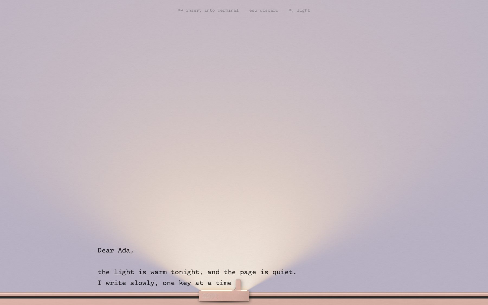
Write first. Send later.
Typewriter is for the messages you want to think about: a reply, a commit message, a prompt, a note to yourself. No window, no toolbar, nothing else on the screen.
1Open
Click into any text field, then press ⌘ ^ (the key left of 1 on a German keyboard). Or choose Open Typewriter from the T in the menu bar.
2Type
The carriage moves with each key. Backspace removes a letter without a trace. Accents and other input methods work as usual.
3Send
The page closes and the text goes into the field you came from: a chat, a mail, the Terminal, the address bar. If there was no field, it goes to the clipboard.
A lamp, not a cursor.
The lamp in the carriage lights the spot where the next letter appears. The rest of the page stays in the cool of the evening.
- Your light. Change the width, softness, reach and color of the beam, from warm white to deep orange.
- Two taps on Esc throw the page away. Copy Last Page in the menu brings it back.
- Quiet while you write. Turn on Do Not Disturb while writing in the settings, and no notification gets onto the page. It goes off again when you close the page. A Focus that was on before stays on.
- Settings while you look. Press ⌘ , on the page, and each change shows at once.
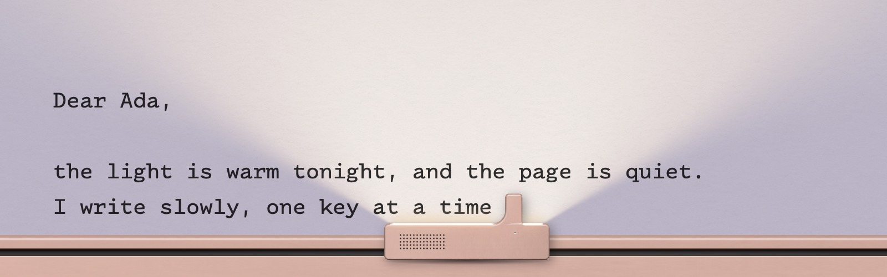
The color of your Mac.
Typewriter reads the housing color of your Mac and builds the carriage and the rail to match. Want another one? Press ⌘ ← or ⌘ → on the page.
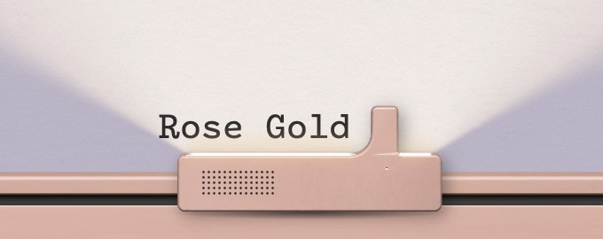
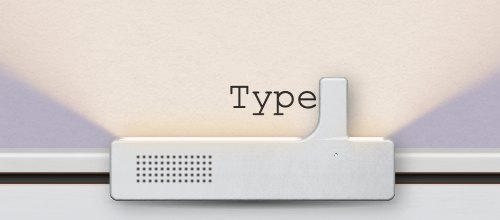
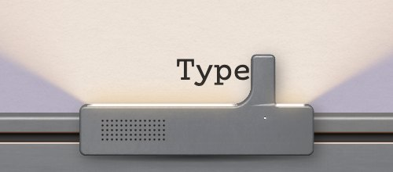
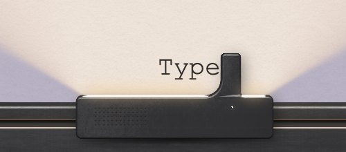
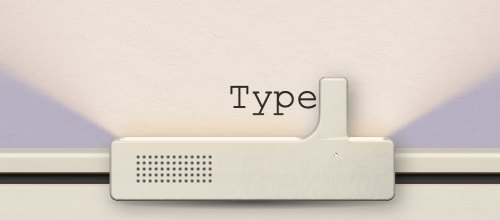
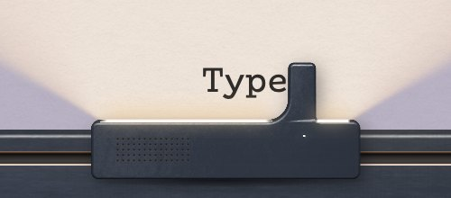
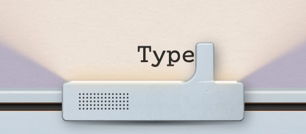
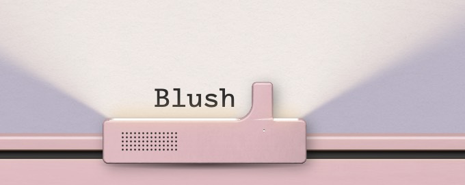
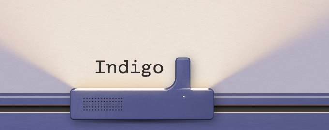
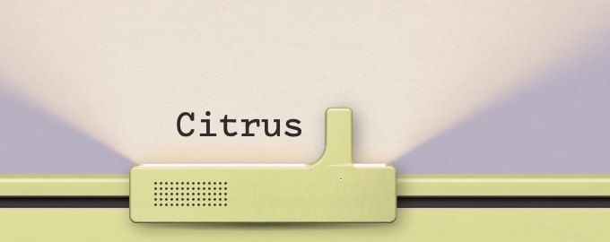
And the sound to go with it.
Pick one in the settings.
Thermal
A soft hiss for each letter, a low purr when the head moves. Calm and warm.
Electric
An electric office typewriter: short keys, a motor that returns the carriage.
Mechanical
Type bars, a bell at the margin and a real carriage return.
None
Only the light and the letters.
A typewriter, not a keylogger.
Typewriter must see your keys while the page is open. So here is what it does with them.
Nothing on disk
Your text is never saved. Only the last page stays in memory, until you quit the app.
No network
No account, no analytics, no updates in the background. The app never connects to the internet.
Only on the page
It reads keys only while the page is open. The Accessibility permission is for one thing: to paste your text into the field you came from.
Get it.
Free. Paste the line below into the Terminal.
curl -fsSL https://typewriter.gnass.buzz/install.sh | shIt installs Typewriter into the Applications folder in your home folder and opens it. Look for the T in the menu bar. When macOS asks, allow Accessibility, so that Typewriter can insert your text. Typewriter is not signed with an Apple developer certificate; apps installed from the Terminal get no warning from macOS. You can read the script first.
Install without the Terminal
- Download Typewriter.zip and move
Typewriter.appinto your Applications folder. - Open it. macOS says that it cannot check the app. Click Done.
- Open System Settings → Privacy & Security. Near the bottom, click Open Anyway next to Typewriter.
- Open the app again and confirm. You only do this once.
Build from source
You need the Xcode Command Line Tools.
git clone https://github.com/fgnass/typewriter && cd typewriter && ./build.sh install
Questions.
Why does it need Accessibility?
To insert the text, Typewriter puts it on the clipboard, gives the focus back to the app you came from and presses ⌘ V for you. Then it puts your old clipboard back. macOS allows such a key press only for apps with the Accessibility permission. Typewriter also uses it to see if the focus is in a text field.
Without the permission, Typewriter still works: the text goes to the clipboard, and you paste it yourself.
The text did not arrive
Open System Settings → Privacy & Security → Accessibility and make sure that Typewriter is on. If it is on but nothing happens, turn it off and on again. Your text is not lost: choose Copy Last Page from the T in the menu bar.
I have no ^ key
The shortcut uses the key left of 1 on German and other ISO keyboards. On other keyboards, open the page from the T in the menu bar.
Why does Do Not Disturb need a shortcut?
macOS lets only its own apps turn a Focus on or off. The Shortcuts app can do it, so Typewriter makes a small shortcut named Typewriter Focus for this. When you turn on Do Not Disturb while writing, Shortcuts asks once if you want to add it. You can open it in Shortcuts and see each step.
When the page opens, the shortcut turns on Do Not Disturb, but only if no Focus is on. When the page closes, Typewriter turns it off again, but only if it turned it on itself.
How do I remove it?
Choose Quit from the T in the menu bar and move ~/Applications/Typewriter.app to the Bin. Then remove Typewriter from the Accessibility list in System Settings. If you added the Typewriter Focus shortcut, delete it in Shortcuts.